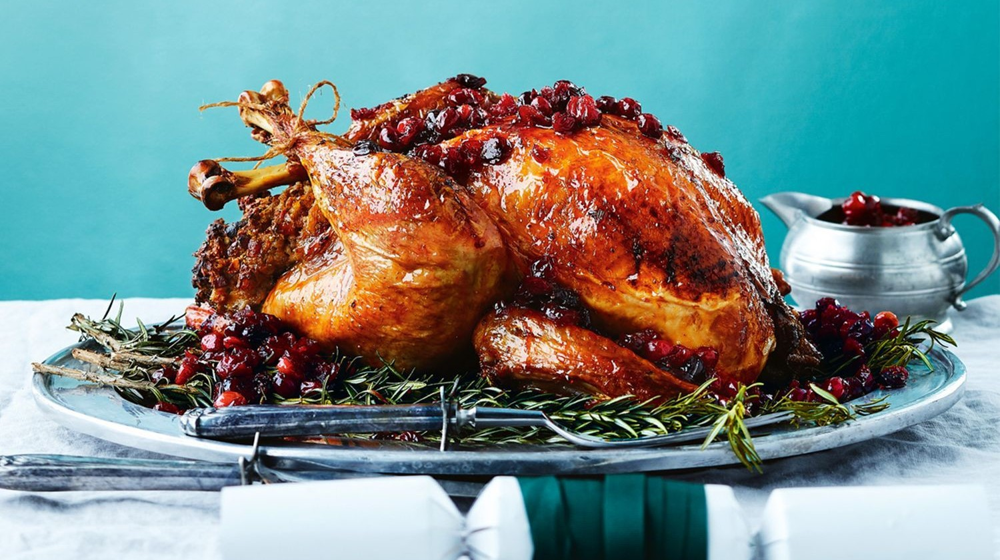

5 hours
Serves 9
Medium
Spice-Glazed Turkey
Try a twist on your turkey this Christmas with a fabulous spicy glaze. You can serve with candied carrots and festive sides of your choice.
INGREDIENTS
5.5kg fresh turkey
50g softened butter
Small bunch of thyme
Around 10 leaves of bay leaves
8 carrots, peeled and cut into large chunks
2 star anise, crushed
½ tsp ground cloves
1 tsp ground nutmeg
1 tsp ground ginger
1 tsp ground black pepper
2 tsp light muscovado sugar
FOR BASTE
50g light muscovado sugar
50g maple syrup
50g melted butter
100ml cider vinegar
METHOD
- Mix all the spices together and divide in 2 portions and put in seperate bowls.
- In the first bowl, mix 2 tsp light muscovado sugar with the spices.
- Put the turkey in a roasting dish and season with the spices under the turkey skin.
- Let it set in the refrigirator for at least 1 hour.
- Put the remaining spice mix and the baste ingredients in a saucepan and heat until the sugar has melted, then set aside.
- Smear the turkey all over with the butter and put the herbs on top.
- Heat the oven to 180C/160C fan/gas 4. Loosely cover with foil and roast for at least 3½ hrs.
- After 30 minutes of roasting, pour over the spiced baste, then baste again every 30 minutes.
- In the final hour, remove the foil and put the carrots in the dish, stir to coat in the juices and continue to cook.